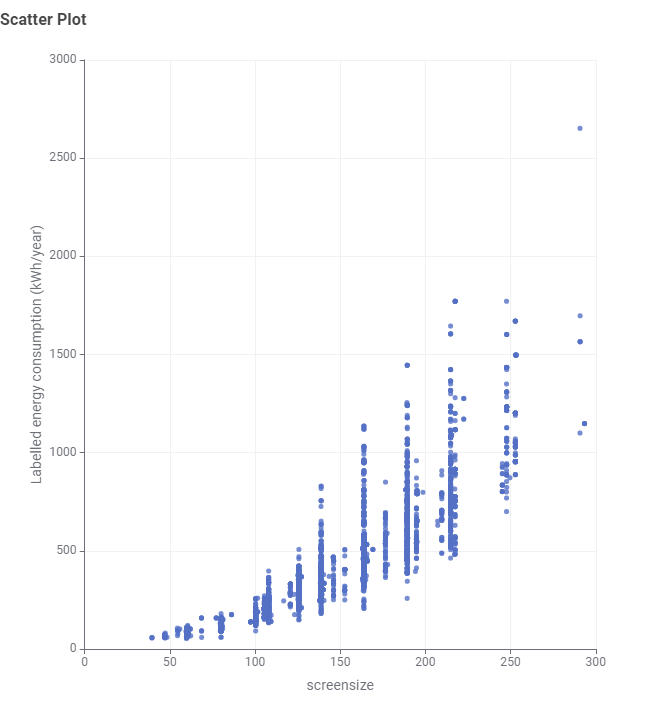

Australian Television Energy Trends
Unpacking the data behind screen size, display technology, and running costs.
1. The Problem: The Hidden Cost of Living Room Screens
Over the past decade, standard living room displays across Australian households have rapidly shifted from compact panels to large 65-inch and 75-inch models. While panel engineering has made significant efficiency strides, the physics of illuminating a substantially larger physical surface area demands considerably more electricity. Many buyers focus primarily on upfront retail sales discounts without considering the recurring operational costs added to their quarterly electricity bills.
2. Visual Evidence: Screen Size vs. Annual Power Consumption
The scatter plot below maps television screen sizes (measured diagonally in centimetres) against their annual labelled energy consumption (kWh/year), based on standard Australian Energy Rating test profiles (10 hours daily on-mode, 14 hours standby):

Key Visual Insights:
- The Exponential Curve: Up to approximately 108 cm (~43"), annual energy demand remains low and stable, generally under 300 kWh/year. Beyond 140 cm (~55"), power draw climbs steeply toward 1,000–1,500+ kWh/year.
- The Efficiency Spread: At common large panel sizes such as 165 cm (~65") and 190 cm (~75"), the data points stretch vertically from ~350 kWh up to over 1,400 kWh/year. This highlights that internal efficiency (panel type, backlighting, and Energy Star ratings) creates massive differences in power draw between two TVs of identical physical dimensions.
3. Indicative Benchmark Breakdown
Estimated operating costs assuming an average Australian electricity tariff of 30¢ per kWh:
| Screen Size (cm / inches) | Energy Range (kWh/Year) | Est. Annual Cost (at 30¢/kWh) |
|---|---|---|
| ≤ 108 cm (~43" and under) | 80 – 250 kWh | $24 – $75 / year |
| 125 – 140 cm (~50" – 55") | 200 – 600 kWh | $60 – $180 / year |
| 165 – 190 cm (~65" – 75") | 400 – 1,300 kWh | $120 – $390 / year |
| 215 cm+ (~85"+ Cinematic) | 600 – 2,600+ kWh | $180 – $780+ / year |
4. Buyer Advice
The 140 cm (55") Tipping Point
Moving from a 140 cm panel to a 165 cm (65") model increases energy demand by approximately 38%, while jumping to 190 cm (75") can elevate running costs by over 70%.
Pay Attention to Stars
Because the vertical spread at larger screen sizes is so wide, opting for a 5.5-star or 6-star model can save hundreds of dollars across a 7-year ownership cycle compared to a low-efficiency model of the exact same size.
Standby vs. Active Draw
Under Australian MEPS standards, standby consumption is strictly capped below 1 Watt. The real expenditure is driven by screen surface area and picture backlight settings during active viewing.